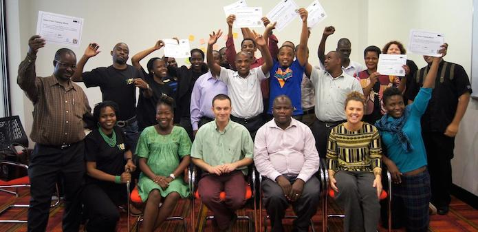
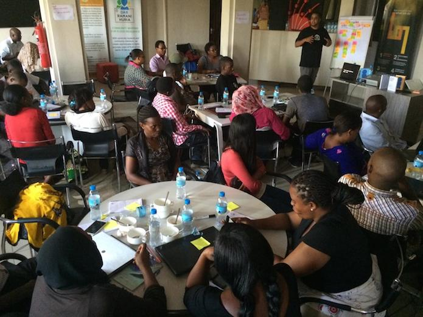

'From media to education, we're making the most out of data in Tanzania'
The open data movement is going from strength to strength in Tanzania. Joachim Mangilima reflects on recent progress made, and how inclusive data training for government and sector-specific groups has boosted initiatives in the country
 A group photo of participants in an open data training session related to the education sector, with ODI Trainer David Tarrant (centre).
By Joachim Mangilima, Open Data Consultant for the Tanzania Open Data Initiative
Most people associate open data with certain products: events, portals, hackathons, and so on. But what does the process of promoting, publishing and maintaining open data on a national scale look like?
As for all countries, in Tanzania this process is iterative, and involves building capacity among the government, civil society and infomediaries to manage, publish and use open data.
As a result of these efforts, the open data scene in Tanzania is going from strength to strength.
Tanzania hosted the first ever Africa Open Data Conference (AODC) last September, and its government has drafted an open data policy to guide its public institutions in how to produce and release data.
Code for Africa has set up its Tanzania chapter, which will help spearhead local chapters of the global Hacks/Hackers community, as well as a flagship civic technology ‘CitizenLab’, with a core team of software engineers, data analysts and digital journalists who will work with local newsrooms and social justice NGOs. The aim is to help newsrooms use data and digital tools to produce compelling storytelling that shapes public discourse and gets the attention of policymakers, so that development issues – such as public healthcare – can be tackled.
Alongside these exciting developments, Tanzania Data Lab (dLab) – part of the Data Collaboratives for Local Impact (DCLI) programme – has been set up to help encourage and enable data analysis as a tool for decision making. Since the exciting news that Tanzania will be joining the Global Data Partnership, the dLab has also started working with the Tanzania National Bureau of Statistics and other stakeholders to help take stock of what data is needed to develop a roadmap for data and use it to help achieve the Sustainable Development Goals.
Boosting data skills in government
In April and June, Tanzanian government agencies underwent diverse and interactive open data training in three key priority sectors: education, health and water. These collaborative sessions, delivered by the ODI, were tailored for civil servants working with data related to these sectors. At their core they focused on building skills about data management, cleaning, visualising and publishing, open data principles navigating the legal and professional challenges of managing open data innovation, and communicating results to a wide audiences.
One aspect of these training courses that stood out from others was that they included selected participants from civil society who worked in the sectors. This enriched the quality of discussion and overall engagement during the sessions, and offered a chance for members of the government and civil service to share experiences and learn from each other.
How open data training helps uncover new challenges
Often, open data training sessions produce as many questions as answers – "How precisely do we define ‘access to water’ in rural areas?" or “What does an ‘average passing rate’ really mean?” But this can be extremely useful in helping us to target programmes and policies.
We’re already noticing that a primary beneficiary of open data initiatives is the government itself. Although often billed as a tool for citizens, open data can also be a powerful mechanism to reduce frictions among the multitude of ministries, departments, and agencies (MDAs) within a government.
Our week-long session in June culminated in the ODI’s flagship course, Open Data in a Day, at Buni Hub. The participants included many media and technology developers, and it was amazing seeing the enthusiasm and interaction within this group, and how excited they were to put what they had learned in the sessions into action.

Participants from the media and technology industry at the Open Data in a Day event at Buni Hub.*
The growing number of open data activities and initiatives in Tanzania is a testimony to the efforts the region is going to in order to get the most out of data. And with more activities planned for future – by the Tanzania Open Data Initiative, the Tanzania Data Lab and Code For Africa, among others – there is hope for the country’s open data ecosystem to grow in strength and quality.
Joachim Mangilima is a World Bank open data consultant. He focuses on building capacity in government institutions that lead the Tanzania Open Data Initiative, including the Tanzania National Bureau of Statistics, the e-Government Agency and the National Archives of Tanzania. Joachim also supports the Open Data Task Force.
If you have ideas or experience in open data that you'd like to share, pitch us a blog or tweet us at @ODIHQ.